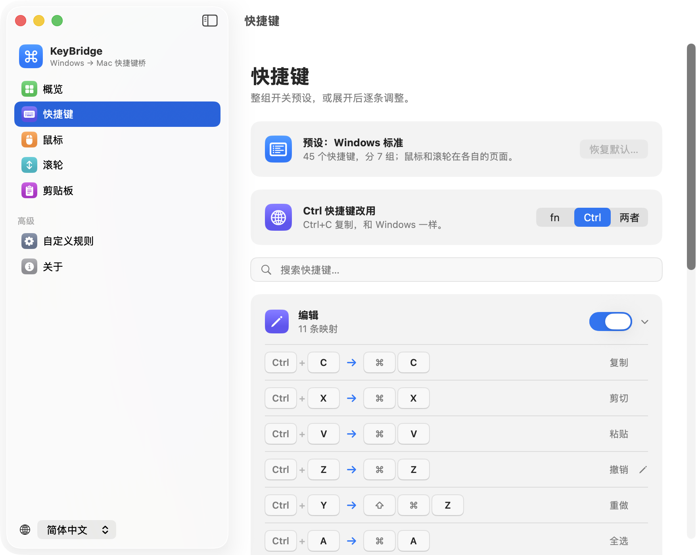
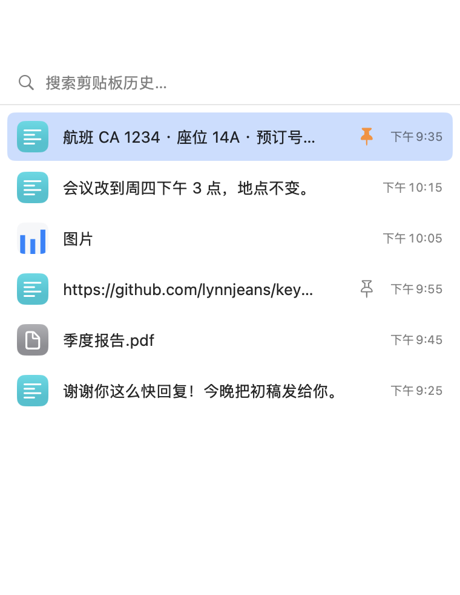

给从 Windows 换到 Mac 的你
Windows 的快捷键，在 Mac 上照样用。
KeyBridge 让 Ctrl+C 照样复制，Home 和 End 照样跳到行首行尾，鼠标侧键照样后退前进。多年的肌肉记忆，不用重新练。
免费开源 · macOS 14 或更高版本

手指记得的，都还算数。
很多日常操作，Mac 用的是另一套按键，有的干脆没有。KeyBridge 把你按下的键，换成 Mac 认得的那一个。
| 在 Windows 上 | 在 Mac 上 | 装了 KeyBridge |
|---|---|---|
| Ctrl+C Ctrl+V Ctrl+Z | 复制、粘贴、撤销要按 ⌘ | 复制、粘贴、撤销、保存、查找…… |
| Home End | 滚到页面顶部或底部 | 跳到行首、行尾 |
| Ctrl+← Ctrl+→ | 切换桌面 | 按词移动 |
| 鼠标侧键 | 没有反应 | 后退、前进 |
| Ctrl+滚轮 | 放大整个屏幕，或者没反应 | 缩放网页，用 fn 或 Ctrl |
| 鼠标滚轮方向 | 和触控板一起反过来 | Windows 的方向，触控板不受影响 |
| 访达里的 Delete F2 Enter | Enter 是重命名，另外两个没反应 | 删除、重命名、打开 |
| Alt+Tab Alt+F4 | 要按 ⌘+Tab 和 ⌘+Q | 切换应用、退出 |
| Ctrl+Shift+Esc | 没有反应 | 打开活动监视器 |
| PrtScn | 没有反应 | 截屏到剪贴板 |
| Win+V 剪贴板历史 | 没有这个功能 | 内置，按 ⇧⌘C 打开 |
为换机的人想周全。
什么键盘都行
PC 键盘、Mac 键盘都能用。可以像在 Windows 上一样按 Ctrl，也可以用 fn 代替它，把 Ctrl 留给 Mac 自己的快捷键。二选一，或者两个都要。
不碰终端
在“终端”和 iTerm 里，Ctrl+C 依然用来中断正在运行的程序。KeyBridge 知道哪里的 Ctrl 另有用处。
随你调整
整组开关，给任何一条录制别的快捷键，或者写自己的规则，对所有应用生效，也可以只对某一个。
鼠标、触控板各管各
滚轮方向和缩放只改鼠标。触控板手势照旧按 Mac 的方式来。
小巧安静
待在菜单栏里，一键暂停。不用装系统扩展，也不用装键盘驱动。
说你的语言
支持 English、简体中文和日本語，更多语言陆续加入。
剪贴板历史，就像 Win+V。
按 ⇧⌘C，最近复制过的东西就出现在鼠标旁边。选中一条，直接粘贴。
- 文字、图片、文件都能搜索
- 常用的内容可以固定
- 密码管理器里的密码一律不记录
- 只保存在你的 Mac 上，绝不上传。默认关闭，由你决定是否打开。

两项权限，各有用处。
任何应用想改变按键的作用，macOS 都会先请你允许这两项。
KeyBridge 不记录任何按键。每次按键它只看一眼，判断是不是要转换的快捷键，然后就放行。没有任何数据统计，每一行代码都是公开的。
常见问题
Mac 上怎么用 Ctrl+C 复制？
macOS 的复制、粘贴和大多数快捷键用的是 ⌘（Command）键。装上 KeyBridge 就生效了：Ctrl+C、Ctrl+V、Ctrl+Z、Ctrl+S 等都和在 Windows 上一样。只有终端例外，那里的 Ctrl+C 要用来中断程序。
Mac 上的 Home 和 End 为什么不能跳到行首行尾？
在 Mac 上，Home 和 End 是滚到文档的顶部和底部，行首行尾要按 ⌘← 和 ⌘→。KeyBridge 替你转换，Shift+Home、Shift+End、Ctrl+Home 和 Ctrl+End 也都和在 Windows 上一样选中、跳转。
用苹果键盘也可以吗？
可以。Control 键就在 PC 键盘上 Ctrl 的位置。如果想把 Ctrl 留给 Mac 自己的快捷键，可以改用 fn，按 fn+C 复制。
KeyBridge 免费吗？
免费，并以 GNU 通用公共许可证第 3 版开源。任何人都可以阅读、编译和改进它的代码。
和 Karabiner-Elements 有什么不同？
Karabiner-Elements 擅长改单个按键、做多层键位，功能强大。KeyBridge 只做一件事：在 Mac 上沿用 Windows 的习惯，第一次打开就能用，还管鼠标和滚轮，而且不需要装系统驱动。